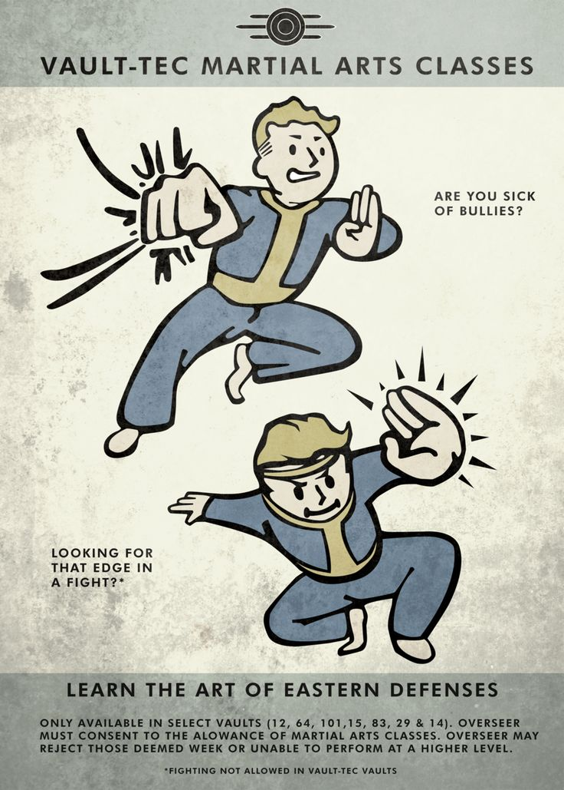

Fallout New Vegas Melee/Unarmed Build By Nicholas Guerrero
-Introduction-
This build will guide you through Fallout New Vegas Hardcore mode with just melee weapons!
Have fun with these unarmed and melee builds!
The Melee/Unarmed Build

Unarmed Melee
Attributes:
8 [9] STR 9[10]
5 [6] PER 3*
7 [8] END 9[10]
1 CHA 1*
4 [5] INT 9[10]
7 [9] AGI 8[10]
8 [10] LCK 1*
*whichever you feel is more important
Traits